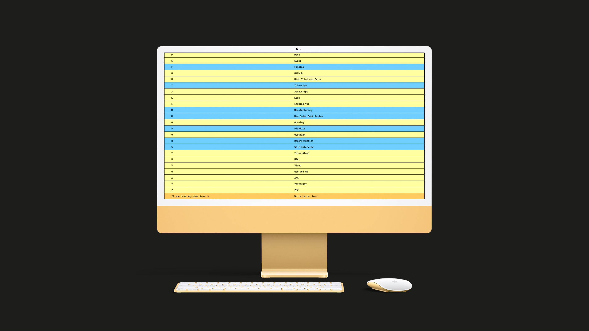
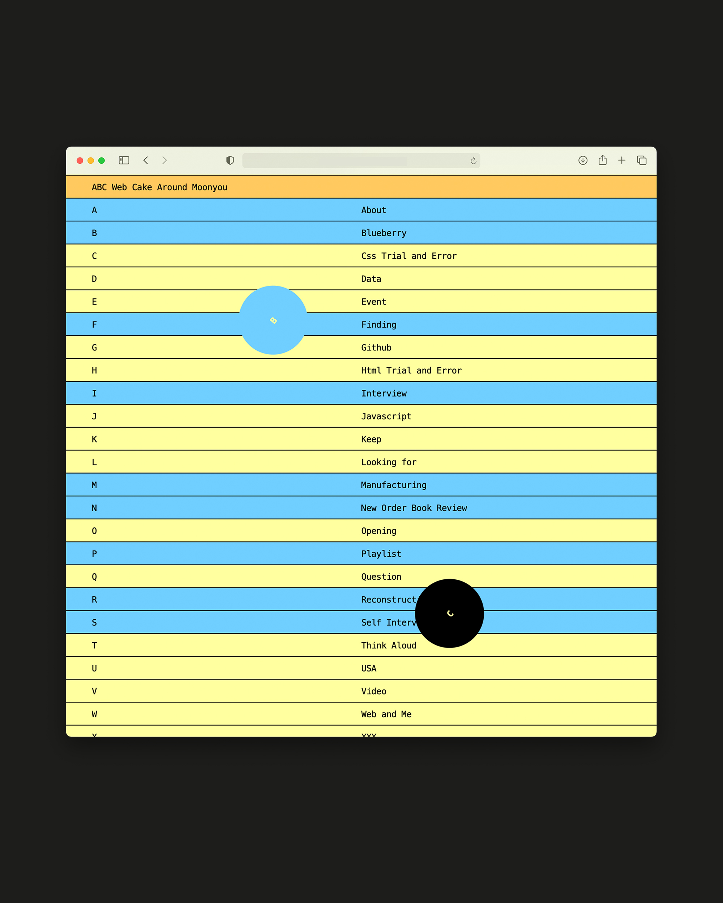
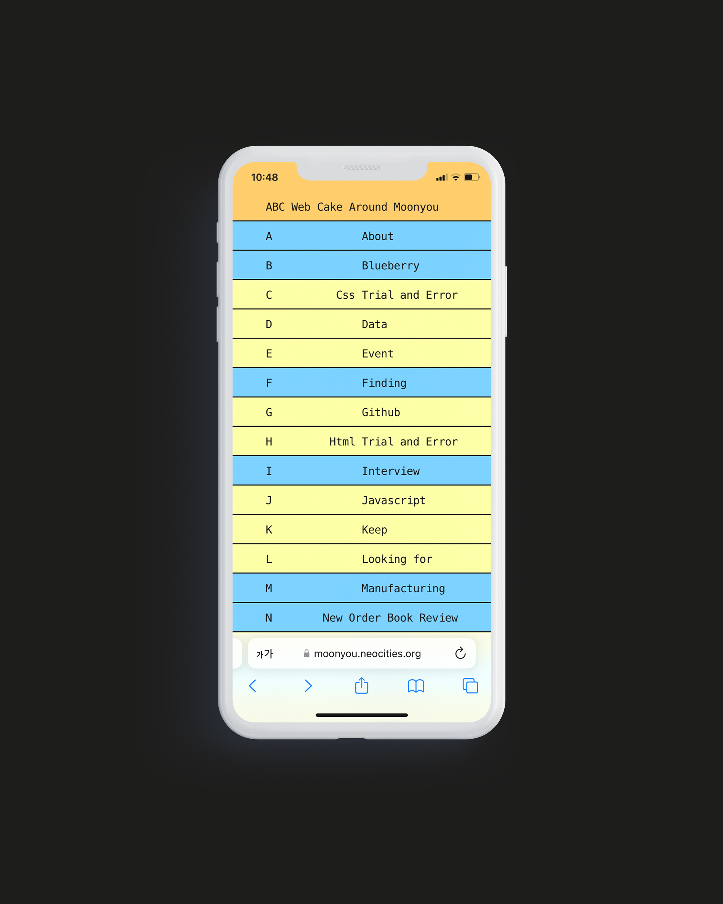
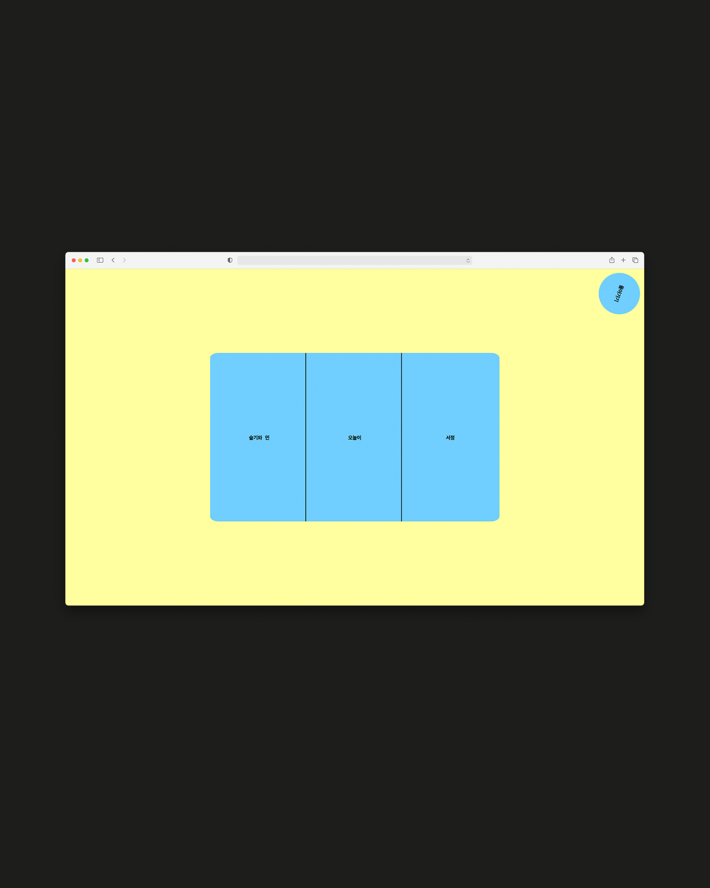
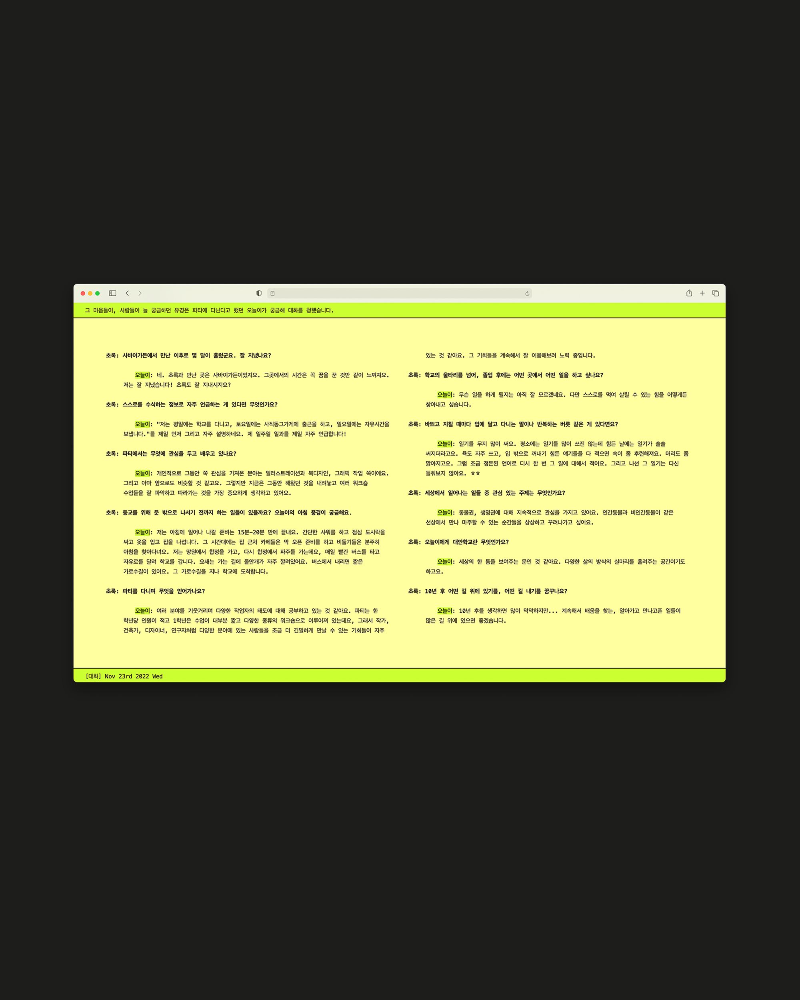

ABC Web Cake is the first website I built. Within the context of the handmade web, the project explores the poetic potential of digital spaces. Based on the metaphor of cake sheets, each sheet was coded by stories and orders. While developing the site, I was guided by a philosophy of duality: that a web creator is both author and architect at once. ‘There are endless possibilities as to what a website could be. What kind of room is a website? Or is a website more like a house? A boat? A cloud? A garden? A puddle? Whatever it is, there’s potential for a self-reflexive feedback loop: when you put energy into a website, in turn the website helps form your own identity.’



